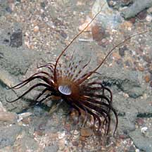
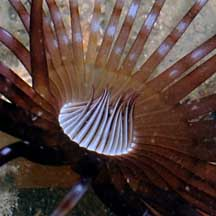
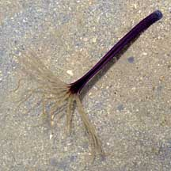
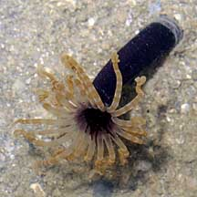
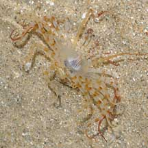
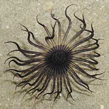
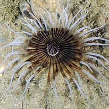

|
|
| cerianthid text index | photo index |
| Phylum Cnidaria > Class Anthozoa > Subclass Zoantharia/Hexacorallia > Order Ceriantharia |
| Small-mouth
cerianthid Awaiting identification* updated Nov 2019 Where seen? This cerianthid with a tiny mouth is sometimes seen on our Northern shores. In seagrass meadows and coral rubble. Features: 2-4cm in diameter. The outer tentacles are elegantly slim and tapering, in various colours sometimes banded. The inner tentacles are very short, tapering to sharp tips and usually held closed with the tips touching, forming a cone around a tiny mouth. Body column slender, may be pale or dark. |
 Beting Bronok, Jul 08 |
 Inner tentacles very short around tiny mouth. |
|
 Pulau Hantu, Jun 09 |
 Pulau Hantu, Jun 09 |
*Species are difficult to positively identify without close examination.
On this website, the animals are grouped by external features for convenience of display.
| Small-mouth cerianthids on Singapore shores |
On wildsingapore
flickr
|
| Other sightings on Singapore shores |
 Changi, May 08 |
. |
 Tanah Merah, Oct 09 |
 Tanah Merah, Jun 09 |